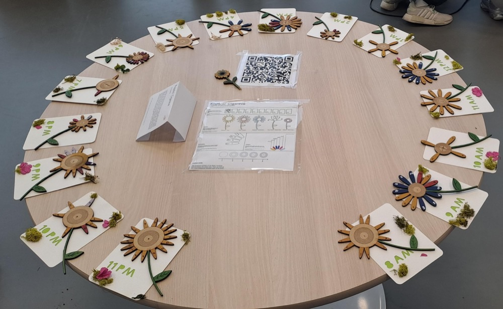
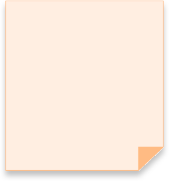
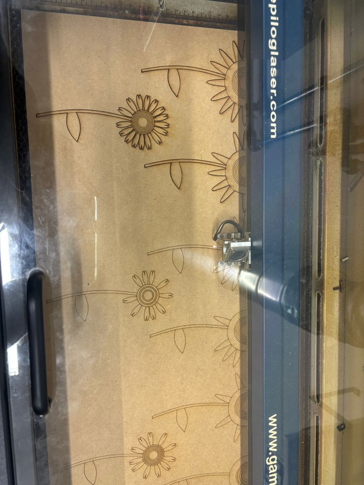
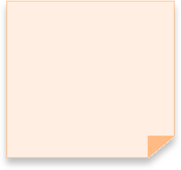
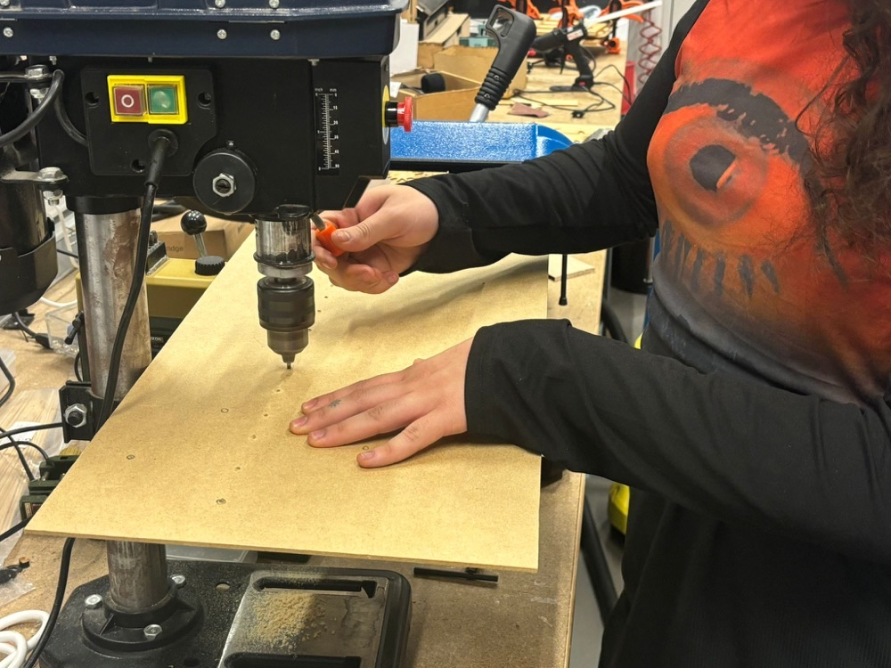
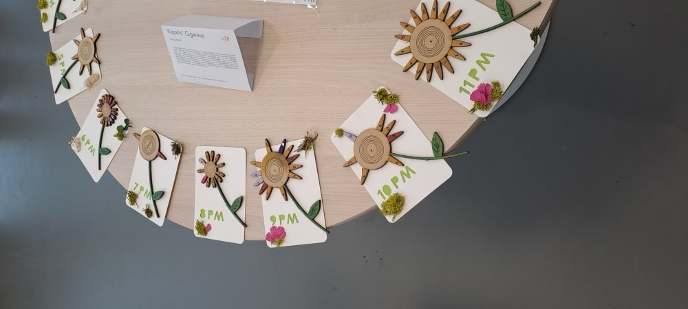
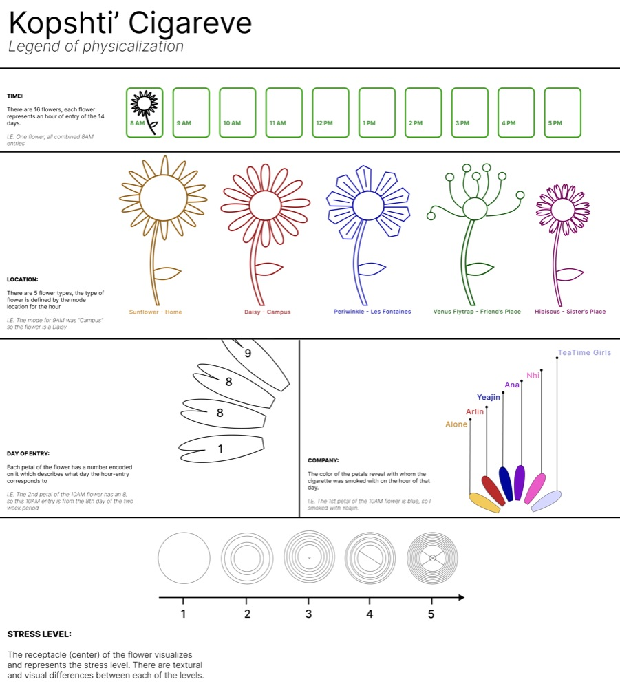

Anis Slimani
Inter-disciplinary Creative

Kopshti ‘Cigareve (The Cigarette Garden) is a data visualization that turns smoking habits into tangible, artistic form. Tracked data such as frequency, emotional triggers, locations, and costs is rendered as laser-cut wooden flowers.
Each flower encodes data: petal count reflects smoking frequency, pistil texture represents emotional dependency, and colour indicates social context. Arranged on grass-textured hour cards, the display captures temporal patterns and behavioural insights. Merging precise data collection with creative physicalization, it offers a different perspective on personal habits and their underlying dynamics.






Kopshti ‘Cigareve (The Cigarette Garden) is a data visualization that turns smoking habits into tangible, artistic form. Tracked data such as frequency, emotional triggers, locations, and costs is rendered as laser-cut wooden flowers.
Each flower encodes data: petal count reflects smoking frequency, pistil texture represents emotional dependency, and colour indicates social context. Arranged on grass-textured hour cards, the display captures temporal patterns and behavioural insights. Merging precise data collection with creative physicalization, it offers a different perspective on personal habits and their underlying dynamics.